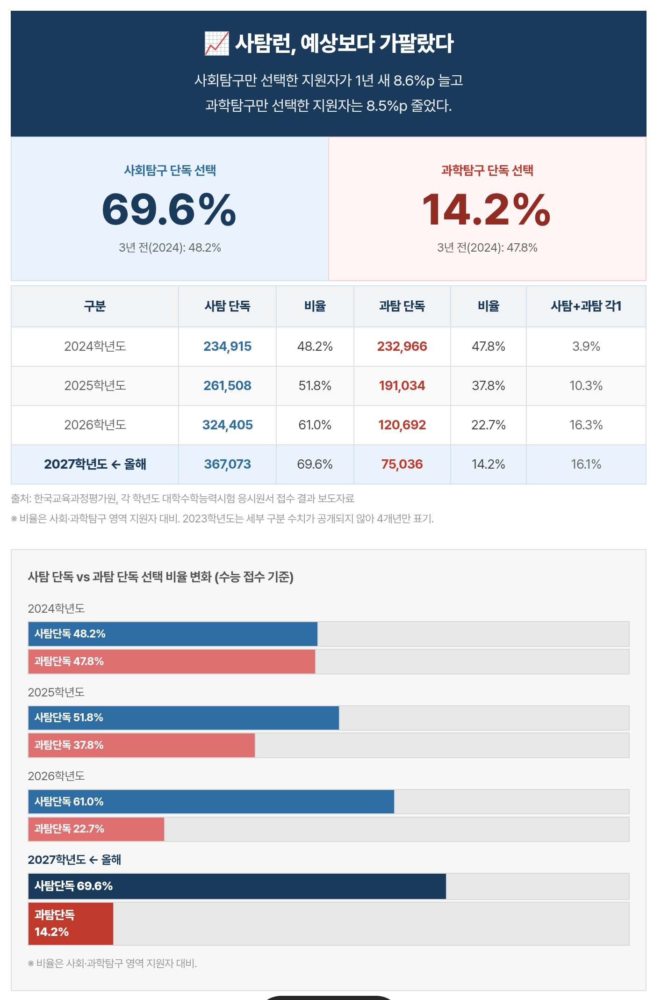
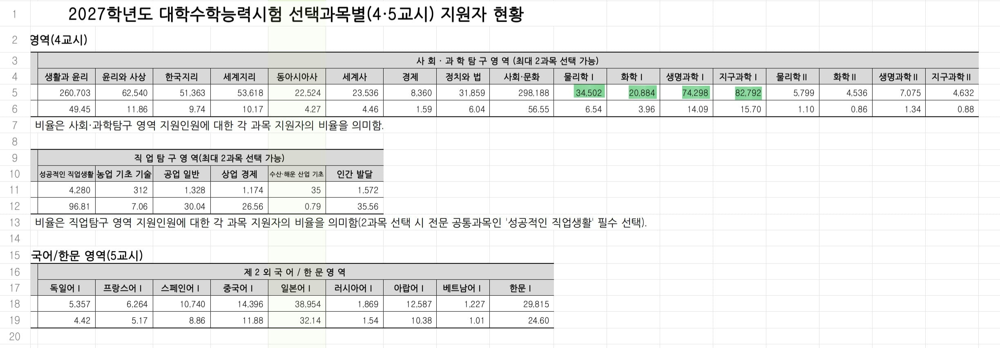
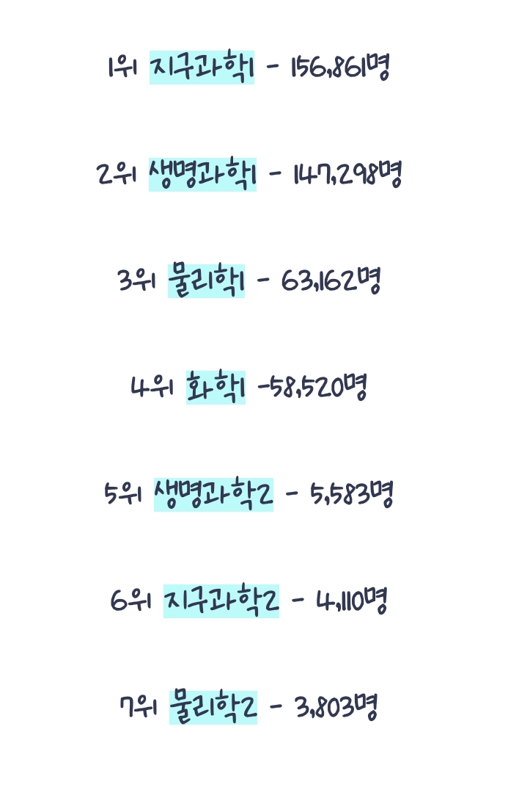

27수능 사과탐 선택자수 비

27수능 탐구 과목별 선택자수

24수능 과탐 선택자수

25수능부터 사탐선택으로도 공대 진학이 가능한 사탐공대가 열림->매일매일이 ufc던 물리화학 하위권들이 떡잎유치원 씨름대회인 사문으로 런->과탐 선택자 수준이 올라가서 등급 따기 빡세짐->사탐으로 더 도망->지금 꼬라지
몇 년만에 과목들이 다 관짝을 들어감
대단하다 교육부씨발
27수능 사과탐 선택자수 비

27수능 탐구 과목별 선택자수

24수능 과탐 선택자수

25수능부터 사탐선택으로도 공대 진학이 가능한 사탐공대가 열림->매일매일이 ufc던 물리화학 하위권들이 떡잎유치원 씨름대회인 사문으로 런->과탐 선택자 수준이 올라가서 등급 따기 빡세짐->사탐으로 더 도망->지금 꼬라지
몇 년만에 과목들이 다 관짝을 들어감
대단하다 교육부씨발
막전위 근수축 개지랄낫던데 ㅋㅋㅋㅋㅋㅋㅋ
유전 보고 물리로 튀었는데 선택자수가 반토막
세상 아무짝에도 쓸모없는 문제를 분별력 확보한다고 존나 씨발 개지랄염병을 쳐놨음ㅋㅋㅋㅋ
잘찍으면 1 못찍으면 3이 뜨는 게 어떻게 수능과목
어떻게 만점택틱이 어차피 시간안에 못푸는 마지막 남은 문항 다찍고 기도하기 ㅋㅋㅋ
그지랄해도 사문딸깍보다 표점낮아버리기
물화가 1단원에 고난도가 몰려있어러 그렇지 생명도 1단원에 유전 넣었으면 지금의 생지 이미지가 아니었을 거 같음
좆병신같은게 개념이 어려운게 아니라 문제가 어려운거라 이게 지랄도 이런 개지랄이 없음
고등학교 유전법칙이 어려울게 뭐가있노 그냥 멘델리안 유전법칙 분리의법칙 독립의법칙 그냥 반나눠 들어갑니다 확률 곱하면됩니다 끝인데
문제가 개지랄나니까 킬러문제인거임그냥
씨바 막말로 구구단도 문제 그따위로 내면 킬러문항임
차라리 시간 더주고 센티모건 재조합비율 때려넣고 자 좆같은 교차문제 한번 풀어보시죠 하는게 더 도움되지
차라리 수학처럼 풀기좆같은문제 내주고 시간 넉넉하게 때려주거나 아니면 범위 태평양만큼 잡아서 씨발뭐였지 챌린지 찍게하는게 훨씬 도움되겠지 이건 뭐
시간안에좆같은문제빨리빨리풀기챌린지는 염병 이게무슨과학이냐
"나는 인서울 공대만 가도 대박이야~"이런 애들이 전부 사탐런해서 이제 과탐에는 메디컬, 서울대 지망생만 남음. 옛날 과2에서 벌어지던 일이 과1에서 똑같이 벌어지는중. 22, 23학년도 수능 과탐이 UFC였으면 이제는 25,26은 CQC임.
이 나라는 정치랑 관계없이 교육에 관심이 딱히 없음
화학2 어디갔어!!!
거긴 원래도 한줌단이었어서
화1 화2를 선택했었지만, 이정돈 아녔는데..
중국 인도는 무슨 고독만들듯이 경쟁시켜서 뽑아내는데 우린 이래가지고 어떻게 경쟁함 ㅋㅋ
고독은 고독임 경쟁은 존나 심해짐
존나 아무짝에 쓸모없는 방향으로 할뿐
성실히 공부한다 가정하면 교육십창내도
대학와도 다 알아서 공부함
쳐 노니깐 문제지
교육부는 교육을 십창내라고 있는 부서가 아님
공교육 박살내는게 목표인 애들이 휘두르는 중이라 지금 목표는 교육 십창내는게 맞음
사탐공대는 24년부터였음
수학 과탐 범위 비중 늘려도 모자를 판에 뻘짓하고 있네..
병신같네 진짜
공대한테 과학 안 봐도 된다는 건 대체 무슨 논리인지 모르겠다... ;;
교수들 대가리 아프겠네
?사탐을 안보고 공대를 갈 수 있다고????
반대로 말하셨어용
네 갈수있어요
화1이 물1보다 적어???
화학 재밌는데
문제가 지랄맞거든 화학문제가 아니라 수학 거기에 적당히 잘 찍어야함
24년도였나 25년도였나 1컷 50찍고 만표 박고 사탐런까지 겹챠지니까 그냥 과목에 안락사 당함 기하 같은 거임
헉 교육부가 사탐런을 유도한 거임? ㄷㄷㄷ
사탐공대!! 뭔소리야
씨발 나 서울대 노리는 것도 아닌데 간지나서 물투 했었는데ㅋㅋㅋ 그래도 2등급 맞고 표점 개높아서 도움됐다ㅋㅋㅋ
요즘 과탐은 만표도 박고 표본도 백았다는 거임...
본문에 나온 포인트 때문에 더 공감가네요. 이런 디테일이 은근 기억에 남는 것 같아요.
와 요새 수능판 존나 신기하네
대입용 공부 대학용 공부 따로따로 ㅋㅋ
생지충 유사문과라고 조롱대상이었는데 아예 문과행 ㅋㅋㅋㅋㅋ
대단하다 진짜 ㅋㅋㅋ
난 수능본지 20년 넘어서 그뭐냐.. 물화생1 생2 이렇게 봤는데(화2도 공부하긴함)
물론 지금 과탐1과목이 라떼 1,2 중간정도 난이도이긴 하지만
대학교 1학년때 화학 생물 배우면서 고딩때 화2 생2 안했으면 공부하기 엄청 힘들었겠다 싶던데 ㅋㅋ
물화지 물2 선택자로서 그래도 공대는 어려웠는데
도대체 요즘 공대는 그럼 뭐부터 가르쳐줘야되는거냐...?
통합사회/통합과학 수능은 내년부턴가?
교육부 씨발 진짜 개 미친새끼들인가? 공대 1학년은 1학기부터 바로 실험실 들어가는 걸 모르나???
사탐이 과탐에 비하면 좆밥과목이 맞음
감성공대 ㅋㅋㅋ 시벌ㅋㅋㅋㅋ
25지구랑 26생명 수능 기출 가서 보고오셈